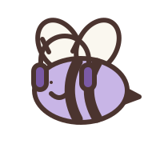

01 / KOPF AUS. SOUND AN.Zum Loslassen
Hummelmodus
Für die 37 offenen Tabs in deinem Kopf.
Dein Sound. Dein kleines Ausklinken.

SUMSIFÜR ALLES, WAS GERADE VIEL IST
Du musst nicht immer funktionieren. Manchmal reicht ein guter Song. Ein lieber Satz. Oder einfach ein Atemzug.
Finde deine PauseOhne Anmeldung. Ohne Leistungsdruck. Mit Po.
DEIN KLEINER RESET
Vier Wege, kurz bei dir anzukommen.
Such dir aus, was sich gut anfühlt.
Für die 37 offenen Tabs in deinem Kopf.
Dein Sound. Dein kleines Ausklinken.
Du musst heute niemandem etwas beweisen.
Mach’s dir erst mal ein bisschen gemütlich.
Einatmen, halten, ausatmen, halten.
Jeder Schritt vier Sekunden. Ganz in deinem Tempo.
Ein kleiner Rahmen für einen vollen Kopf.
4 ein · 4 halten · 4 aus · 4 halten
Vier Sekunden ein. Acht Sekunden aus.
Folge dem Kreis und lass die Schultern sinken.
Du darfst dir diesen Moment nehmen.
4 ein · 8 aus · so oft du magst
Es gibt hier kein Richtigmachen. Atme bequem und ohne Druck. Wenn dir schwindelig wird oder es unangenehm ist, pausiere und atme normal weiter.
Schön, dass du kurz für dich da warst.